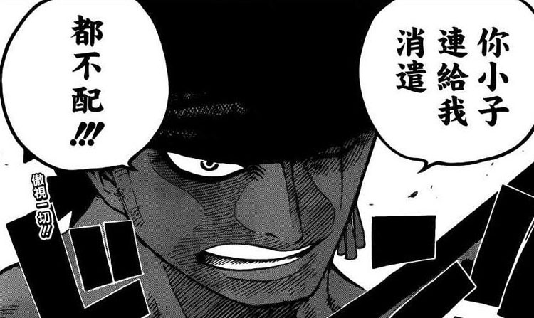
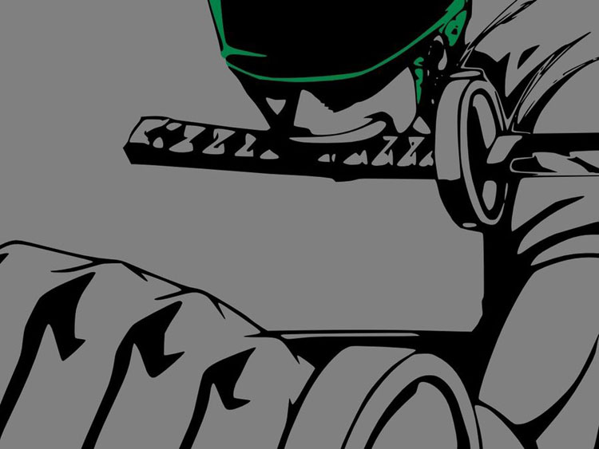

Roronoa Zoro,草帽海贼团剑士，路飞招募的第一个船员，评价Zoro我想从以下几个方面来说。
一.实力
索隆作为三大主力之一，毫无疑问是草帽海贼团最重要的战斗力之一，三大主力的战斗风格分别是拳头、剑和踢技。理论上，兵刃总比拳踢厉害，所以画起索隆的实力提升时也最容易。相比之下， 香吉总有一种难以再厉害的感觉，毕竟用踢在难以再漫画中表现出来。索隆的最终目的是成为世界上的第一大剑豪，又师从鹰眼，估计最终的目标可以实现。
二.成长
成长这个主题作为《Jump》三要素之一，在草帽海贼团身上都有体现，但索隆的成长更突出一些。从进入伟大的航路之前与鹰眼的那一战哭着喊出“我不会再输了”，再到两年间跟随鹰眼修炼，成长的轨迹一只都有被刻画。
三.坚韧
这是索隆最吸引人的地方，他的每一战甚至是每一次出场都足够Man。最经典的当属面对三三桂帆船。
四.成长
有人说索隆相当于草帽的副船长，也有人说他头脑简单粗人一个。我的观点，索隆作为这个团队当中最重要的主心骨，是支持船长的最大的一根支柱。如果非得冠以副船长之名，那么他绝对承受的起。